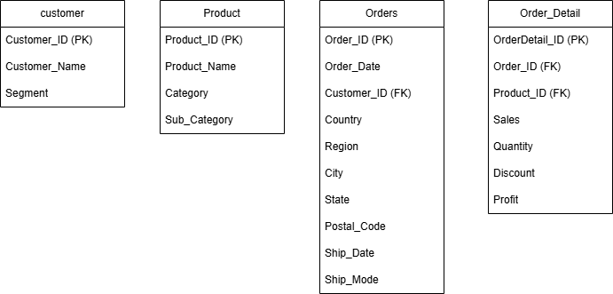

Database Design | SQL | Business Analysis
The Retail Sales Analytics Database is a relational database designed to manage retail sales information efficiently. The database organizes customers, products, orders, and order details while minimizing redundancy through normalization. This project demonstrates database design principles, documentation standards, and preparation for future analytical reporting using SQL and Power BI.
The database consists of four normalized tables designed to manage customers, products, orders, and order details while maintaining referential integrity.

| Table | Purpose | Primary key |
|---|---|---|
| Customer | Store customer information | Customer_ID |
| Product | Store product information | Product_ID |
| Orders | Stores order details and shipping information | Order_ID |
| Order_Details | Stores individual products within each order | OderDetaild_ID |
The database was normalized to Third Normal Form (3NF) to eliminate redundant data, maintain consistency, and improve update efficiency. Customer, Product, Order, and Order Detail information are stored in separate tables linked through primary and foreign keys.
The data dictionary defines the structure of the Retail Sales Analytics database by documenting each table, attribute, data type, key constraints, and business meaning. It serves as a reference for developers, analysts, and stakeholders to ensure consistency and data integrity.
| Table | Column | Data Type | PK/FK | nullable? | Description |
|---|---|---|---|---|---|
| Customer | Customer_ID | VARCHAR(50) | PK | No | Unique customer identifier |
| Customer | Customer_Name | VARCHAR(100) | - | No | Customer's full name |
| Customer | Segment | VARCHAR(50) | - | No | The segment which customer belongs |
| Product | Product_ID | VARCHAR(50) | PK | No | Unique product identifier |
| Product | Product_Name | VARCHAR(200) | - | No | Product’s name |
The following tools and concepts were used during the design and documentation of the Retail Sales Analytics Database.